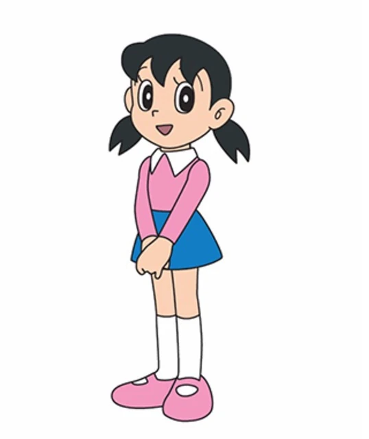
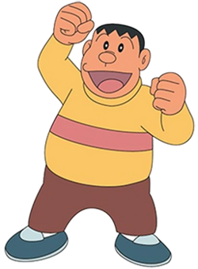
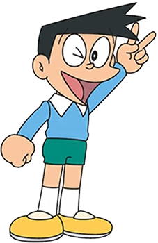

Karakter
Kenali karakter dalam Serial Animasi Doraemon

Doraemon
Robot kucing dari abad ke-22 dengan kantong ajaib.

Nobita Nobi
Anak yang ceroboh tapi baik hati. Selalu dibantu Doraemon keluar dari masalah.

Shizuka Minamoto
Teman baik Nobita, cerdas dan sopan. Sering menjadi motivasi bagi Nobita untuk berbuat baik.

Gian
Teman Nobita yang kuat dan sering marah, tapi sebenarnya punya hati yang baik.

Suneo Honekawa
Teman Gian dan Nobita yang suka pamer, tapi sering takut kalau Gian marah.